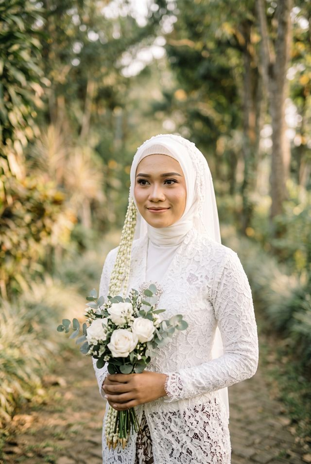
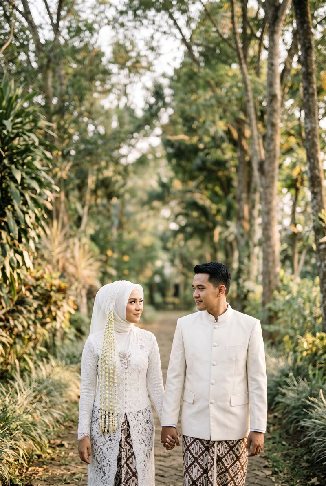
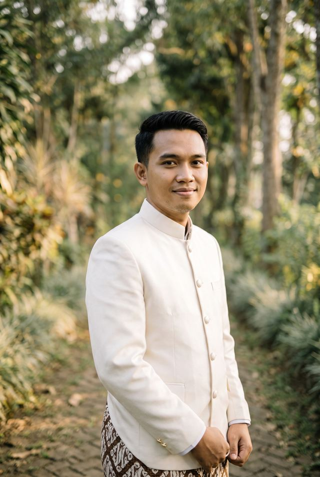
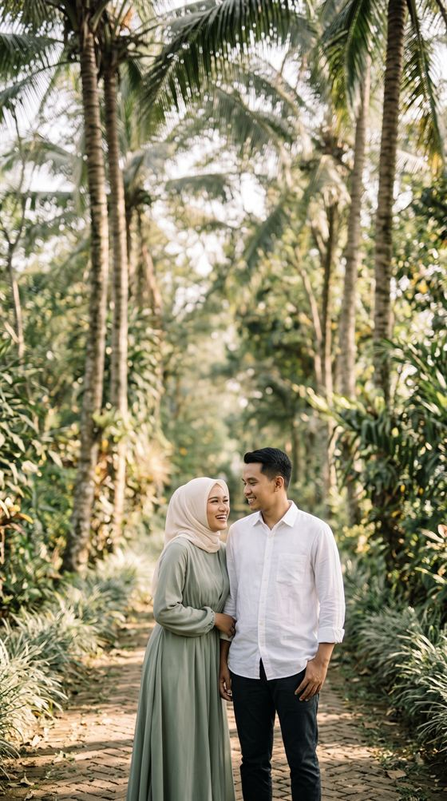
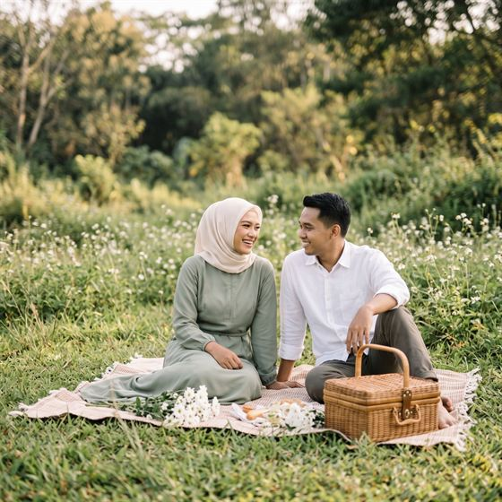
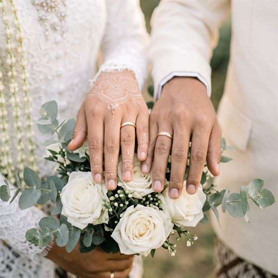

Mempelai Wanita
Larasati Pramesti
Putri dari Bapak Wiryo Hadi & Ibu Sekar Arum
Instagram @laras.contoh
Undangan Pernikahan

Sabtu, 12 Desember 2026 Denpasar, Bali
Kepada Yth. Bapak/Ibu/Saudara/i
Tamu Undangan
Dengan memohon rahmat dan ridho Allah SWT, kami bermaksud mengundang Bapak/Ibu/Saudara/i untuk hadir di hari pernikahan kami, dan menjadi bagian dari taman kecil kebahagiaan yang kami rawat bersama.
Mempelai

Mempelai Wanita
Putri dari Bapak Wiryo Hadi & Ibu Sekar Arum
Instagram @laras.contoh

Mempelai Pria
Putra dari Bapak Arif Hidayat & Ibu Siti Aminah
Instagram @bima.contoh
Kisah Kami

2019
Sebuah acara kampus mempertemukan dua orang yang sama-sama datang terlambat. Kursi yang tersisa hanya dua, bersebelahan di barisan paling belakang.

2023
Dari obrolan singkat menjadi kebiasaan; dari kebiasaan menjadi rumah. Kami belajar menunggu, belajar mengalah, dan belajar pulang.

2026
Lamaran sederhana di hadapan keluarga, lalu kami memilih satu tanggal: Sabtu, 12 Desember 2026.
Simpan Tanggalnya
Rangkaian Acara
Pagi
Sabtu, 12 Desember 2026
09.00 – 10.30 WITA
Rumah Keluarga Mempelai Wanita
Jl. Contoh Raya No. 1, Denpasar, Bali
Lihat PetaMalam
Sabtu, 12 Desember 2026
19.00 – 21.30 WITA
Gedung Serbaguna Contoh
Jl. Contoh Kedua No. 2, Denpasar, Bali
Lihat PetaGaleri
Ketuk foto untuk memperbesar.
Konfirmasi Kehadiran
Mohon kabari kami paling lambat 5 Desember 2026, agar kami dapat menyiapkan tempat untuk Anda.
Ucapan & Doa
ucapan masuk
Tanda Kasih
Doa restu Anda adalah hadiah terbaik bagi kami. Bila ingin memberi tanda kasih, Anda dapat mengirimkannya melalui:
Bank Contoh
1234 5678 90
a.n. Larasati Pramesti
Dompet Digital
0812 3456 7890
a.n. Bima Arya Nugraha
Kirim Hadiah
Jl. Contoh Raya No. 1, Denpasar, Bali
a.n. Larasati Pramesti
Merupakan suatu kebahagiaan dan kehormatan bagi kami apabila Bapak/Ibu/Saudara/i berkenan hadir dan memberikan doa restu.
Wassalamu'alaikum Warahmatullahi Wabarakatuh
Kami yang Berbahagia
Keluarga Bapak Wiryo Hadi & Ibu Sekar Arum
Keluarga Bapak Arif Hidayat & Ibu Siti Aminah